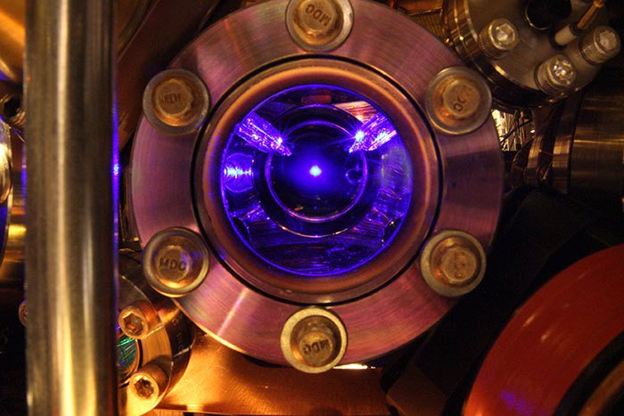
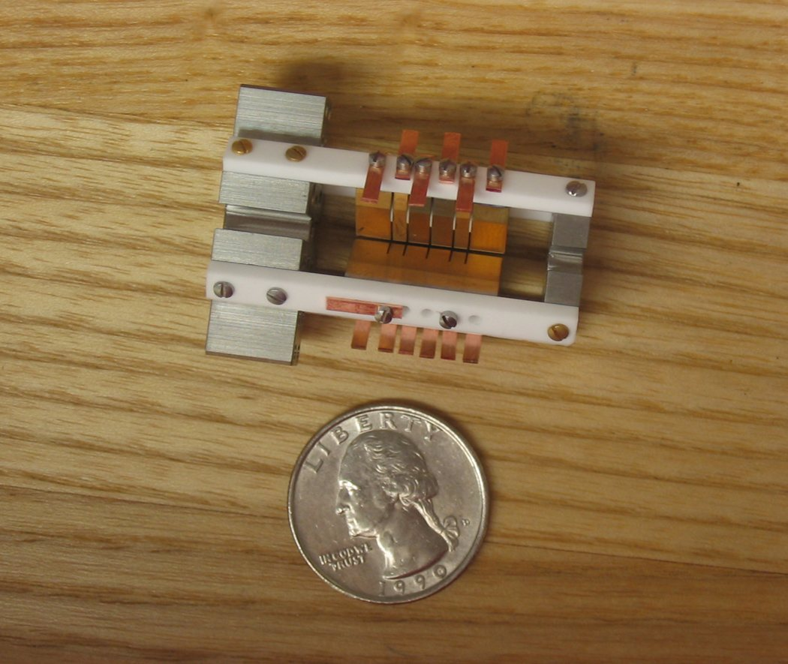
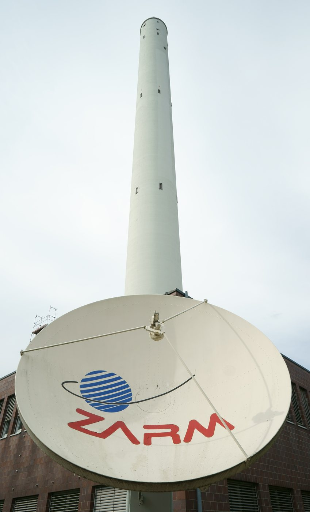
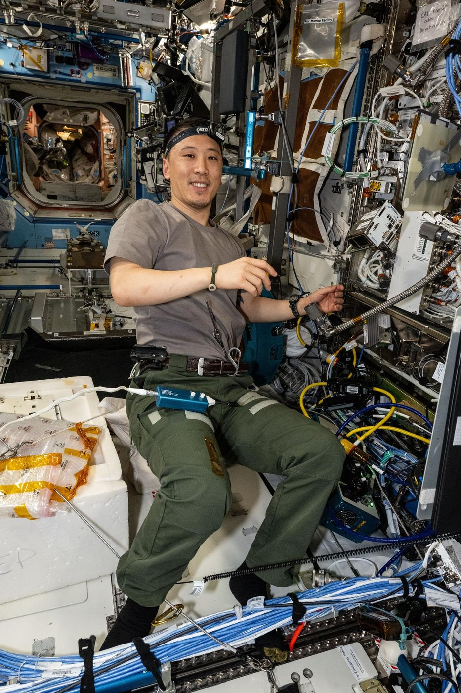
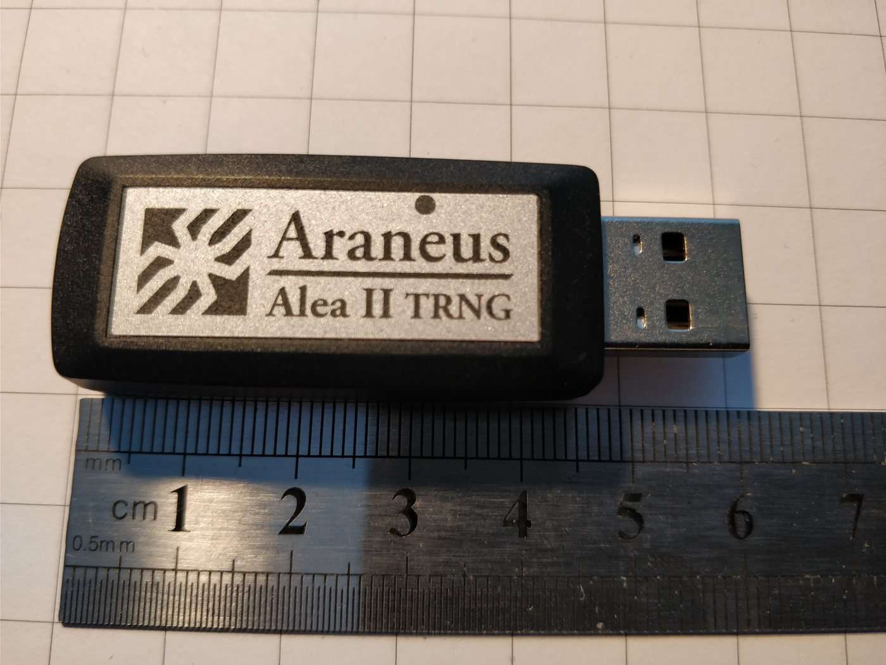
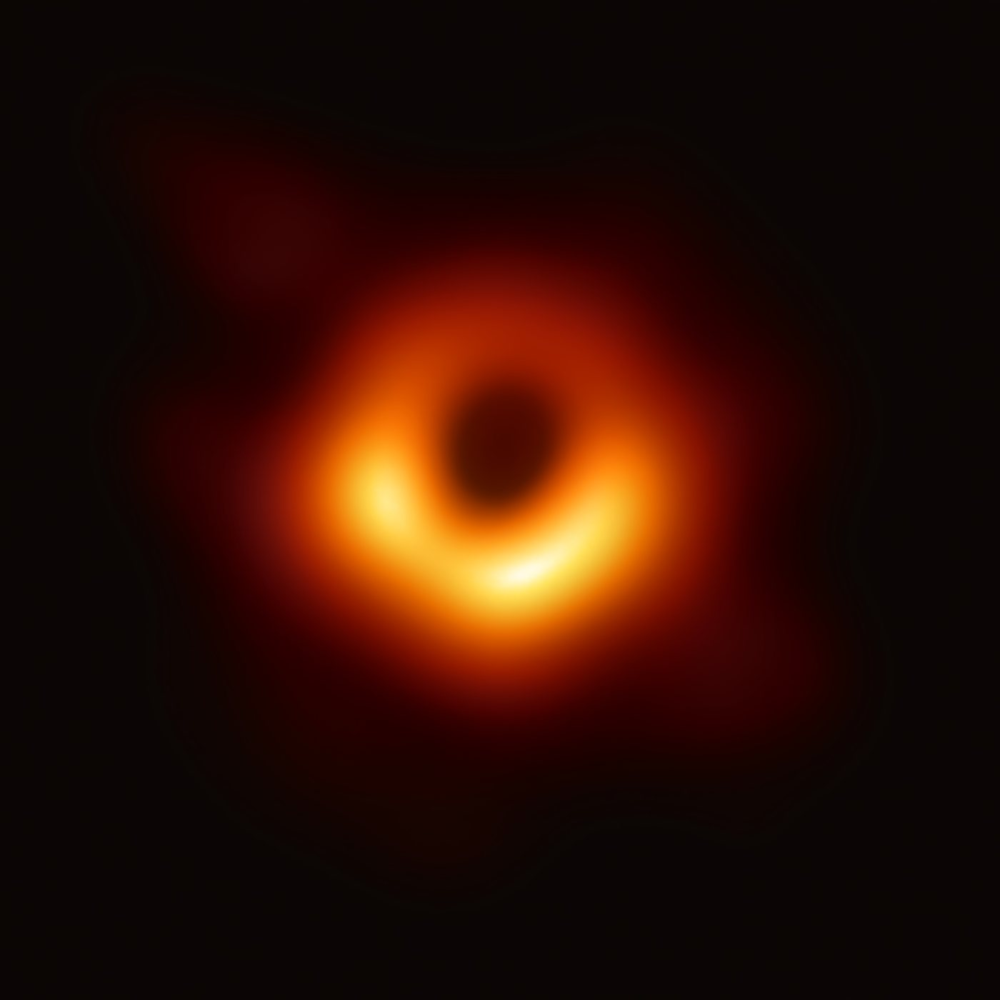
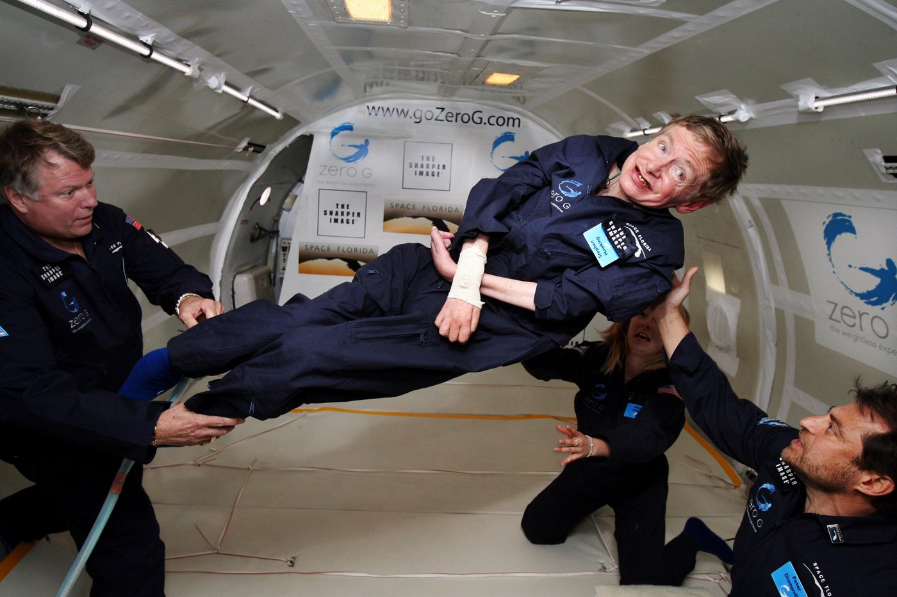
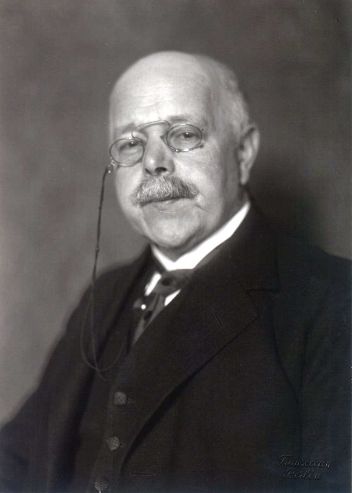
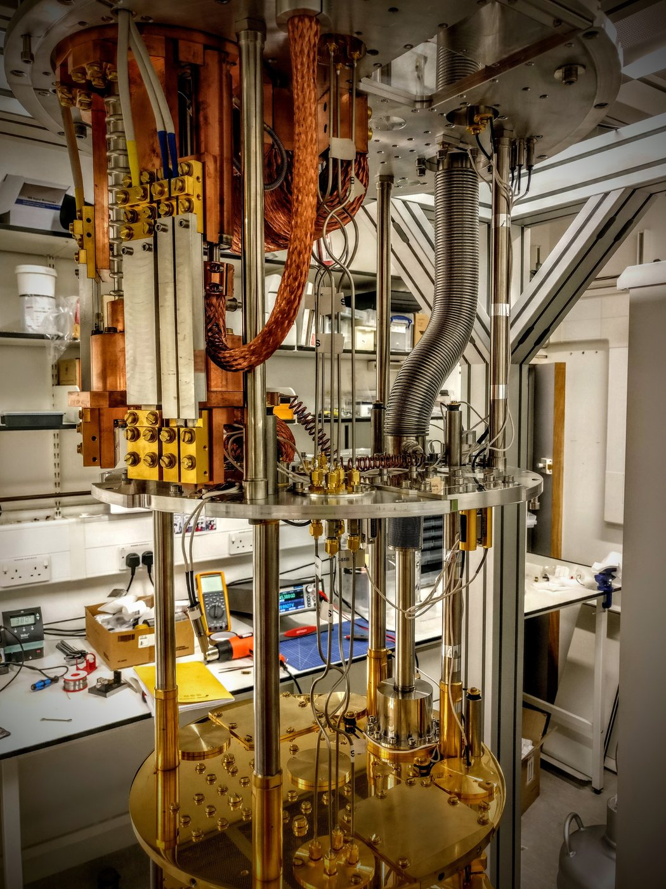

Someone in a security Slack I'm in asked, half-joking, whether cooling a machine to absolute zero would stop its clock. The answer is no, and the reason it's no turns out to be more useful to us than a yes would have been.
I've spent a while in the primary literature on this — relativistic thermodynamics, optical clock metrology, near-extremal black hole thermodynamics — and I came away with a conviction I didn't expect: absolute zero is the closest thing physics has to our concept of perfect security. It's a rigorously defined asymptote. It organizes an entire field. It is provably unreachable. And its actual practical value isn't the destination — it's that the cost of approaching it is quantifiable.
Everything interesting about it lives in the same three places everything interesting in our field lives: the gap between spec and implementation, the assumptions nobody re-audited, and the noise floor you can't design away.
[01]The Spec Is Clean. Temperature Isn't in the Metric.
Start with the thing that gets misreported constantly, because you'll hear it again and it's wrong.
General relativity says proper time depends on the metric and your worldline — gravitational potential and velocity. That's it. There is no T term in g_μν. A hot clock and a cold clock at the same potential, moving at the same velocity, accumulate identical proper time. Temperature does not slow time down. Full stop.
Temperature does gravitate, because in GR every form of energy gravitates — heat lands in the stress-energy tensor, and Tolman worked this out in 1930. But the magnitude is a joke: cooling a solid from room temperature to absolute zero changes its gravitational mass by roughly one part in 10¹⁴. Most of what a "cold" object weighs was never thermal. Copper's conduction electrons sit in a degenerate Fermi sea at about 4.2 eV per electron; the entire lattice thermal energy at 300 K is 0.078 eV per atom. Cooling to zero removes about 2% of the internal kinetic energy and leaves the rest — degeneracy energy, binding energy, zero-point motion — untouched and still gravitating.
So the spec is boring. Cold things fall the same. Cold clocks tick the same.
Then you build one.
[02]The Implementation Leaks, and It Leaks at 5×10⁻¹⁵
Here's the part I think our community should actually care about.
The best clocks on Earth are strontium and ytterbium atoms held in optical lattices. Their dominant systematic error — the single largest thing standing between metrologists and better numbers — is the blackbody radiation Stark shift. Room-temperature photons from the vacuum chamber walls perturb the atomic energy levels. The shift scales as T⁴, and for strontium at 300 K it's about −2.13 Hz, or 5 parts in 10¹⁵.

Sit with that. Physics says temperature has nothing to do with the rate of time. The device that measures time disagrees by five parts in a quadrillion, purely because it's warm.
For scale: 5×10⁻¹⁵ is the gravitational redshift you'd get by moving the clock about 46 meters up out of Earth's gravity well. The temperature of the room is masquerading as tens of meters of spacetime curvature.
This is a side channel. Not a metaphor for one — structurally the same thing. The abstraction (proper time) is temperature-invariant. The implementation (an atom in a metal box) is not, because the implementation is made of matter that couples to the environment through channels the abstraction never modeled. If you've ever watched a formally constant-time comparison leak through cache timing on real silicon, you already understand the entire problem.
And the mitigations are our mitigations:
- Shield it. Katori's group ran strontium in a cryogenic enclosure at 95 K, dropping the wall contribution to −21.55 mHz and the total systematic to 7.2×10⁻¹⁸. A 2025 NIST cryogenic ytterbium clock got the BBR Stark uncertainty to 1.7×10⁻²⁰ using a dynamically actuated radiation shield — roughly 40× better than any prior lattice clock. That's defense in depth applied to photons.
- Characterize the leak precisely. Low-emissivity vacuum-compatible materials, in-vacuum thermometry, and measured rather than modeled polarizabilities. You can't shield what you haven't profiled.
- Or pick a primitive that isn't vulnerable. The aluminum-ion quantum-logic clock has a tiny differential polarizability, so BBR barely touches it. Its total systematic is 9.4×10⁻¹⁹ and it's dominated by ion motion, not radiation. They didn't harden the implementation; they chose a different algorithm with better constant-time properties. That's the whole argument for constant-time-by-construction over patched-in mitigation, playing out in atomic physics.

My subjective read: the BBR shift is the most infosec-shaped result in modern metrology, and it's almost never framed that way. The lesson isn't "temperature affects time." The lesson is that your measurement apparatus is part of your attack surface, and the cleaner your theory is, the easier it is to forget that.
[03]The Noise Floor Is Load-Bearing
You cannot cool your way out of it, either.
The coldest matter ever produced sat at 38 picokelvin — a rubidium condensate at the Bremen drop tower, collimated with a magnetic lens so its expansion energy was almost nothing, observable for about two seconds. NASA's Cold Atom Lab on the ISS runs comparable ensembles around 50 pK.


At 38 pK, the atoms are still moving. Zero-point motion isn't thermal and doesn't cool. Helium famously refuses to freeze at absolute zero under its own vapor pressure for exactly this reason — zero-point energy keeps it liquid until you squeeze it past ~25 bar.
The clock people have a hard number for this. The aluminum-ion clock, with 3D near-ground-state sideband cooling, still carries a secular-motion time dilation of −1.9(1)×10⁻¹⁸. That's not a cooling failure. That's the floor. No engineering removes it, because it's what the ground state is.
time(). There is no zero-entropy state, no perfectly quiet channel, no truly silent system — and half of applied cryptography is built on being glad about it.

If you've ever argued that "unpredictable" is a physical property and not a software one, absolute zero is your existence proof.
[04]The Proof Had a Bug in It for Thirty-Six Years
This is the section I'd put in front of anyone who writes or reviews security proofs.
Black holes have a temperature — Hawking temperature, proportional to surface gravity. Push a black hole to its theoretical limit of charge or spin and that temperature goes to zero. These are extremal black holes: genuine T = 0 objects, emitting no Hawking radiation, not evaporating.

In 1973 Bardeen, Carter and Hawking conjectured a third law of black hole mechanics: you can't get there in finite time. In 1986 Werner Israel published a proof. The community accepted it. It sat in the textbooks.
In 2022, Christoph Kehle and Ryan Unger disproved it. Israel's argument rested on an assumption about the behavior of apparent horizons that turned out not to hold. Kehle and Unger built explicit solutions — collapse that forms an exactly Schwarzschild horizon and then, at a later time, an exactly extremal Reissner–Nordström horizon. Finite time. Regular initial data. Arbitrarily smooth. The paper is described in the literature, without hedging, as a definitive disproof.
Then this year it got worse for the old picture. Crump, Gadioux, Reall and Santos published in Physical Review Letters 136, 171405 (2026) a demonstration in five-dimensional pure vacuum gravity — no matter fields at all — that an extremal rotating black hole can form in finite time by absorbing gravitational waves, including from vacuum data containing no initial black hole. The third law isn't just false for a particular matter model. It's false in gravity by itself.
Three things I take from this:
- A theorem is a conditional. It says: given these assumptions, this conclusion. Israel's math wasn't sloppy; his premise about horizon regularity was unexamined. That's not a math failure, it's a threat-modeling failure. Every "provably secure" claim you've ever read is a conditional too, and the assumptions are the attack surface. Random oracle. Honest majority. Trusted setup. Non-adaptive adversary. The proof is fine. The premise is where you get owned.
- Thirty-six years of consensus is not verification. It's citation. There's a difference, and our field re-learns it every time a widely deployed primitive turns out to have a paper nobody had actually re-derived.
- The correct response to a broken proof isn't to abandon the claim. It's to find the real boundary. McSharry and Reall went on to prove that supersymmetric black holes satisfying a local mass-charge inequality genuinely cannot form this way. A residual third law survives, with the conditions now stated explicitly. That's what a good post-mortem looks like: not "the law is dead," but "here is precisely the regime where it holds and why we previously thought it was broader."

[05]Unattainability Is a Work Factor, Not a Wall
The third law of thermodynamics is the one that actually holds up, and its modern form is the most infosec-legible statement in the whole area.
Nernst said in 1912 that you can't reach absolute zero in finite steps or finite time. That sat as a physical intuition — supported by the observation that every specific cooling method got less efficient as it went — for over a century without a general proof.

In 2017 Lluís Masanes and Jonathan Oppenheim finally derived it in general, covering arbitrary cooling processes including ones exploiting quantum mechanics and infinite-dimensional reservoirs. Their framing is explicitly computational: they model the cooling apparatus as a thermal machine constrained the way a universal computer is constrained, and get out a relation between achievable temperature and time.
The result: attainable temperature scales as an inverse power of cooling time. Reaching zero requires infinite steps and an infinite reservoir. Henrik Wilming and Rodrigo Gallego later compressed this into a single inequality using a quantity they call the "vacancy" — a free-energy analogue for cooling that tells you how close to zero you can get for a given budget.
That is a work factor. It's not "impossible," it's priced. Which is exactly the shape of every honest security argument we make. Nobody claims AES-256 can't be brute-forced; we claim it costs more than the universe affords. Nobody claims a KDF can't be inverted; we claim the iteration count sets the price. Masanes and Oppenheim did for cooling what key stretching does for password hashing: turned a binary impossibility claim into a cost curve with a tunable parameter.
I'd argue this is the healthier framing in both fields. "Unbreakable" is a marketing word. "Here is the exponent" is an engineering one.
There's a subtlety I like even more. Tien Kieu has pointed out that Nernst's heat theorem and the unattainability principle are not the same statement — unattainability follows strictly for quasi-static adiabatic processes, which formally leaves a crack open for non-adiabatic means, and he notes an apparent tension with projective quantum measurement, since a projective measurement onto a ground state produces a pure state. Nobody thinks this is a practical exploit. But it's the right instinct: the conflated statement is stronger than either component, and someone should always be checking whether the stronger version was ever actually proved.

[06]The arXiv Has a Supply Chain Problem Too
Here's the part that made me most uncomfortable, and it's the one I'd most want this audience to sit with.
There is a body of published work — A. Dmitriev and collaborators, plus some others — reporting that heated objects weigh less, with a negative temperature coefficient of gravity around 10⁻⁶ per kelvin. Multiple papers. On arXiv. With plots, error analysis, cross-citations, and speculation that this might explain the persistent scatter in measurements of Newton's constant G.
Relativity predicts about 10⁻¹⁴. They're claiming an effect eight orders of magnitude larger.
In 2020, Tajmar, Hentsch and Hutsch ran the controlled version: analytical balance in vacuum, plus a thermogravimetric balance in argon, copper and platinum and alumina, room temperature to over 1000 °C. Result: a 3σ limit below 1.8×10⁻⁸, ruling out every claimed anomaly by more than two orders of magnitude. The anomalies were almost certainly convection — hot samples weighed in open air, thermal plumes rising off them, buoyancy from the heated gas column. Fluid dynamics wearing a gravity costume.
We have the same problem, differently branded. Typosquatted packages that look like the real package. AI-generated CVE reports that read like triage-ready bug reports. Vendor whitepapers that cite other vendor whitepapers in a closed loop. Reproduction is the only signature verification the epistemic supply chain has, and it's underfunded in physics for exactly the reason it's underfunded here: nobody gets promoted for confirming that the thing works the way we thought.
While I was digging, I hit a smaller version of the same thing. A 2024 paper on the Tolman–Ehrenfest law in scalar-tensor gravity has an arXiv preprint whose stated conclusion contradicts the published journal version on whether the gravitational scalar field affects thermal equilibrium. Not fraud — a revision. But if you cite the preprint you're citing the opposite of the record. Version pinning isn't just a software hygiene problem.
[07]Time as a Derived Value, Not a Primitive
For the distributed-systems people in the room, this one's for you.
In 1994 Alain Connes and Carlo Rovelli proposed something called the thermal time hypothesis. The problem it addresses: in a generally covariant theory there's no preferred global time variable, so where does the flow of time come from? Their answer is that time isn't fundamental. Given a state on an algebra of observables, Tomita–Takesaki modular theory hands you a canonical one-parameter flow, and they identify that with physical time. Time is a property of the state, not of the stage.
Rovelli and Smerlak then derived a lovely consequence. There's a classical result — the Tolman–Ehrenfest effect — that a fluid in equilibrium in a gravitational field is not at uniform temperature: T√g₀₀ = constant, so a column of fluid at equilibrium is hotter at the bottom. They showed this falls straight out of thermal time, with the interpretation that temperature is the ratio of thermal time to proper time — the "speed of time."
Now push it to absolute zero, which is what I actually set out to do.
The modular flow needs a faithful state to exist. A gapped pure ground state generically isn't faithful — some operators annihilate it — so the modular Hamiltonian isn't well-defined and the construction degenerates. Under this framework, T = 0 is exactly the limit where emergent thermal time stops being definable. No state, no flow, no ordering. A system with no events has no timeline.
I want to be careful here, because I checked and this is a genuine gap rather than a settled result: nobody appears to have explicitly analyzed the β → ∞ limit of the thermal time hypothesis in the primary literature. There's a real subtlety, because in relativistic QFT the vacuum is cyclic and separating for wedge algebras by Reeh–Schlieder, which is precisely the Bisognano–Wichmann/Unruh structure — so a modular flow does exist for the vacuum restricted to a subregion. That's a property of localization, not of global equilibrium at zero temperature. Whether "thermal time stops at absolute zero" is therefore an open question, not a fact, and the hypothesis itself has serious critics who argue the identification of modular flow with physical time is circular.
Flagging it as open rather than dressing it up as an answer is the whole point. Which brings me to the last one.
[08]Fuzz the Boundary
The extremal black hole is where the model dies, and it dies only at the boundary.
Semiclassical gravity handles black holes beautifully across the parameter space. Then you go to exactly extremal — exactly T = 0 — and it falls apart. The near-horizon geometry develops an infinite AdS₂ throat. The Schwarzian mode, the Goldstone mode of the broken near-horizon conformal symmetry, stops being a small correction and starts dominating the path integral. Iliesiu and Turiaci did the calculation properly and Turiaci's conclusion is blunt: without low-energy supersymmetry — that is, in the real world — extremal black holes at exactly zero temperature do not exist, because the classical picture breaks down completely before you get there.
Absolute zero is unattainable for black holes too. Not by a thermodynamic argument. By a quantum one.
One more, briefly, because it punctures an assumption I see in incident response constantly. The Nernst form of the third law says entropy goes to zero at T = 0. It's false for real materials. Water ice retains a residual entropy of about 3.54 J/mol·K at absolute zero, matching Pauling's estimate of k_B ln(3/2); spin ice and frustrated magnets do the same. The ground state is degenerate — there are exponentially many configurations at minimum energy.
[09]What I Actually Take From This
Absolute zero is a good asymptote. It's precisely defined, it's the organizing limit of a whole field, the cost of approaching it is quantified, and it cannot be reached. Perfect security has all four properties and we should probably talk about it the same way.
Here's the summary I'd put on a slide:
| The claim | The reality |
|---|---|
| Cooling changes how things gravitate | Yes, by ~10⁻¹⁴. Bounded experimentally at 1.8×10⁻⁸. Six orders from detectability. |
| Cooling changes how time passes | No. Temperature isn't in the metric. |
| Cooling changes what a clock reads | Yes, ~5×10⁻¹⁵ for Sr — pure side channel, mitigated to 1.7×10⁻²⁰ cryogenically. |
| You can reach absolute zero | No. Cost scales as an inverse power of time. It's a work factor. |
| At absolute zero, nothing moves | Expectation values are static. Zero-point fluctuations aren't. The floor is −1.9×10⁻¹⁸ and it's permanent. |
| At absolute zero, time stops | Proper time: no. Thermal time, under a contested hypothesis: maybe, and nobody's checked properly. |
The theory was never the fragile part. The fragile parts were a 36-year-old proof with an unexamined premise, a measurement apparatus leaking the temperature of the room into the definition of a second, a literature carrying eight-orders-of-magnitude-wrong results that looked exactly like correct results, and a model that works everywhere except at the one boundary everyone was most interested in.
We know this posture. We just usually apply it to software.